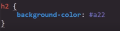
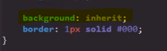
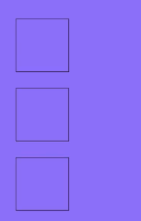
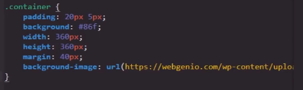
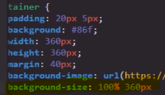
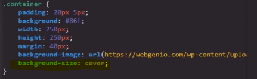
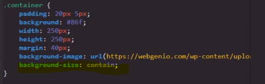
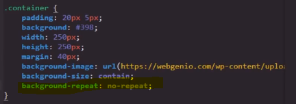
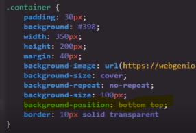
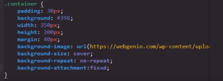

Esta propiedad está especializada en definir las características del fondo de la página, para ajustarse a cualquier situación cuenta con una serie de variantes las cuales son:
background-color
-
Esta propiedad permite definir el color del fondo de la página web. Esta propiedad acepta múltiples formatos de color como lo son:
- Palabras clave
- Colores del sistema
- RGB hexadecimal
- RGB numérico
- RGB porcentual
Ejemplo

Valor Inherit
Se trata de un valor especial de la propiedad background, su función es simple, este valor indica que el elemento debe "heredar" el color de fondo del contenedor en el que se encuentra, de ese modo tanto el elemento padre como el hijo tendrán exactamente el mismo color.
Código

Resultado

Background-image
-
Esta propiedad permite insertar una imagen en el fondo de la página, esta en sí es la única función de esta propiedad, para realizar esto es necesario incluir el valor url junto con la ruta hacia la imagen entre paréntesis, de la siguiente forma:

Background-size
-
Esta propiedad se centra en definir las dimensiones que se le darán a la imagen traída por background-image, para lo cual cuenta con múltiples valores:
-
Porcentajes: De esta forma se define que la imagen ocupe un porcentaje del contenedor en el que se encuentra, puede ser declarado un único valor que se aplicará para toda la imagen o también se pueden declarar dos valores diferentes, uno referente al eje X y otro para el eje Y, de la siguiente manera

-
Cover: Este valor define que la imagen debe ajustarse a las dimensiones del contenedor parcialmente

-
Contain: Este valor define que la imagen se ajuste a las dimensiones del contenedor pero manteniendo las resoluciones originales, con la peculiaridad de que en el caso de que exista espacio vacío en el contenedor la imagen se repetirá para llenar ese espacio.

Background-repeat
-
Esta propiedad define el si la imagen se repetirá y por lo tanto únicamente posee dos valores:
Repeat: Define que la imagen sí se repetirá para rellenar cualquier espacio libre en su contenedor
No-repeat Define que la imagen no se repetirá para rellenar el contenedor en caso de que sobren espacios libres

Nota: Esta propiedad se puede usar para que la imagen no se repita al emplear la propiedad "background-size" con un valor "contain", de ese modo el espacio sobrante en el contenedor será rellenado por el "background-color" que puede que se utilice en el fondo de este.
Background-clip
-
Esta propiedad permite cortar la imagen, para definir qué sección de la imagen será cortada, posee varios valores:
-
border-box: Se trata del valor por defecto, recorta el área de la imagen que se encuentra en los bordes del elemento
padding-box; Recorta el área de la imagen que se encuentra en el padding del elemento
-
content-box: Recorta toda el área de la imagen que se encuentre fuera del área del contenido del elemento
Background-origin
-
Esta propiedad define que las dimensiones de la imagen se ajusten para mostrarse dentro de las áreas establecidas del elemento.
-
border-box: Se trata del valor por defecto. Define que la imagen se muestre desde los bordes del elemento
padding-box; Define que la imagen se muestre desde dentro del área del padding
-
content-box: Define que la imagen se muestre únicamente desde dentro del área de contenido del elemento
Nota: La diferencia entre background-clip y background-origin es que background-clip recorta la imagen, mientras que background-origin la genera desde el punto establecido.
Background-position
-
Esta propiedad permite ubicar la imagen en alguna de las cuatro esquinas del contenedor o en el centro de este, para hacerlo esta propiedad necesita de dos valores, el primero referente al eje X y el segundo referente al eje Y, por lo tanto posee los valores:
Left top: La imagen se posiciona a la izquierda y arriba
left bottom: La imagen se posiciona a la izquierda y abajo
Left center: La imagen se posiciona a la izquierda y el centro
Right top: La imagen se posiciona a la derecha y arriba
Right bottom: La imagen se posiciona a la derecha y abajo
Right center: La imagen se posiciona a la derecha y el centro
Center top: La imagen se posiciona en el centro y arriba
Center bottom: La imagen se posiciona en el centro y abajo
Center center: La imagen se posiciona en el centro del contenedor
Ejemplo

background-attachment
Esta propiedad define a qué elemento tomará la imagen como referencia para ubicarse, puede ser el contenedor en el que se encuentra (visualizar de forma normal) o el viewport de la página, en cuyo caso la imagen se ubica en el fondo del viewport pero el contenedor de la imagen actúa como una ventana a esta.
Esta propiedad posee dos valores posibles:
Scroll: Define que la imagen se puede desplazar y esté ubicada de forma normal en su respectivo contenedor
Fixed: Define que la imagen se ubique anclada en el viewport y el contenedor actúa como una ventana que se desplaza conforme el usuario se mueve por la página
